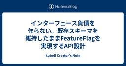
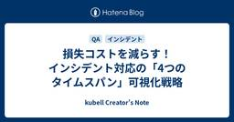
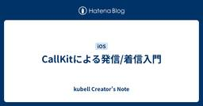
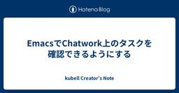
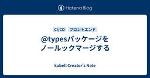
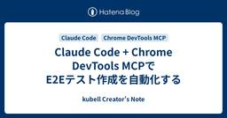
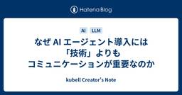
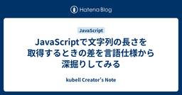
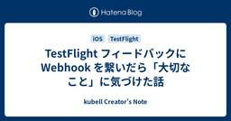
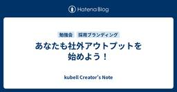

kubell Creator's Note
https://creators-note.chatwork.com/
ビジネスチャット「Chatwork」のエンジニアのブログです。
フィード

インターフェース負債を作らない。既存スキーマを維持したままFeatureFlagを実現するAPI設計
kubell Creator's Note
はじめまして。kubell でバックエンドエンジニアをしている佐藤と申します。 この記事は kubellアドベントカレンダー2025 12/12 の投稿です。 はじめに kubell では現在、 Chatwork のシステムをモノリスから小さなシステムへと段階的に移行しています。詳しくは 開発生産性 Conference 2024 での発表 をご覧ください。 この移行の一環として、 クライアントの接続先を現行 API から新規 API に徐々に繋ぎ変えているのですが、ここでひとつ悩ましい問題がでてきました。 「もし新規APIに問題があったら、すぐに現行 API に戻せるようにしたい」 ビジネス…
2日前

損失コストを減らす！インシデント対応の「4つのタイムスパン」可視化戦略
kubell Creator's Note
この記事は、kubell Advent Calendar 2025（シリーズ 2）の12日目の記事です。 こんにちは。QAエンジニアの稲垣です。 突然ですが、質問です。 インシデントが発生した場合の損失コストがどれくらいかご存知ですか？ あなたのチームではインシデントが発生した場合、どうように対応をしていますか？ 私が入社当初から関わっているインシデント障害対応改善委員会では、インシデント対応の継続的な改善活動を行っています。 本記事では、その取り組みの一部をご紹介します。
2日前

CallKitによる発信/着信入門
kubell Creator's Note
こんにちは！kubellのiOS開発グループ機能開発チームの田川です。 この記事はkubell Advent Calendar 2025の11日目の記事です。 本日、 Chatwork内の通話機能であるChatwork Liveのシステム移行が行われました。 これまで「Agora」のSDKを使用していた部分が「ZoomVideoSDK」に置き換わっています。 今回はChatwork Liveでも使われているCallKitについて解説します。
3日前

EmacsでChatwork上のタスクを確認できるようにする
kubell Creator's Note
こんにちは、認証グループの横井です。 Emacsを使用していると、様々なものをEmacs上に集約していきたくなりますよね。 そこで、EmacsでChatwork上に存在するタスクを確認できるようなプラグインを作成しました。 この記事は kubell Advent Calendarの12/11の投稿です。
3日前

@typesパッケージをノールックマージする
kubell Creator's Note
こんにちは、株式会社kubellでフロントエンドエンジニアをしている石田（@ishida_2002）です。 この記事は kubell Advent Calendar 2025 の記事です🎄 私の所属しているフロントエンドチームでは Renovate を利用して依存関係の更新を行なっています。 今回は、Renovate が発行した PR をできるだけノールックマージするために、弊チームが取り組んでいる内容を紹介したいと思います。
4日前

Claude Code + Chrome DevTools MCPでE2Eテスト作成を自動化する 1
1
kubell Creator's Note
Chatworkの利用料金やプランに関係する開発・運用を担当するチームでPHPエンジニアをしているヤシロです。 この記事では、Claude CodeとChrome DevTools MCPを組み合わせて、E2Eテスト作成の自動化をやってみた取り組みについてご紹介します。 取り組みの中で、うまくいかないところもあり、完全な自動化まではできなかったものの、自動化に近づく仮説も出てきたので、あわせてご紹介します。 この記事は、kubell Advent Calendar 2025（シリーズ 2）の10日目の記事です。
4日前

なぜ AI エージェント導入には「技術」よりもコミュニケーションが重要なのか
kubell Creator's Note
「BPaaS/AI+BPO Advent Calendar 2025」の投稿です。 adventar.org プロダクト戦略ユニットの山本です。 はじめに AI エージェントを業務に導入する際、技術的な課題よりも人とのコミュニケーションが障壁になることがあります。今回はそのポイントについてお話しします。
4日前

JavaScriptで文字列の長さを取得するときの差を言語仕様から深掘りしてみる
kubell Creator's Note
この記事はkubell Advent Calendar 2025の9日目の記事です。 こんにちは、kubellのフロントエンド開発グループの末竹(magcho)🐧です。 最近はJavaScriptの言語仕様を読むことを趣味としています。この趣味ですがなかなか体感したことのない方には伝えづらく今回ブログに書き起こすことにしました。 ユーザーからの入力を受け付けるようなアプリケーションを作っていると、文字数に上限を設定したくなる場面が多々あると思います。 JavaScriptで文字数を数える方法としていくつかありますが、String.lengthは絵文字など一部の文字を正しく数え上げることができな…
4日前

TestFlight フィードバックに Webhook を繋いだら「大切なこと」に気づけた話
kubell Creator's Note
こんにちは、iOSアプリ開発グループ 基盤開発チーム、”KNT（ケンティー）”こと中江です。 TestFlight のフィードバックは「静か」に届く 社内でアプリの検証をお願いする際、TestFlight は非常に便利です。しかし、そこには一つだけ致命的な欠点があります。 それは、「フィードバックが届いても気づきにくい」こと。 メール通知などで、チーム全体に知らせる標準機能がなく（2025年12月時点）、管理画面を能動的に見に行かない限り、せっかく送ってもらった報告に気づけません。 「見に行けばいい」と言われればそれまでですが、開発に集中していると、どうしてもログインして確認する作業は後回しに…
6日前

あなたも社外アウトプットを始めよう！
kubell Creator's Note
こんにちは！！iOSアプリ開発グループ 機能開発チームでリーダーをしている中山 龍(@ryu_develop)です！ 今日は12/8！僕が好きなEXILE TAKAHIROさんの誕生日です。ということで、本日の kubell Advent Calendar 2025 の記事は僕が担当します🎄 突然ですが！社会人になってからの2年半、kubell社員の中で最も多くの社外アウトプットをしたのは僕だと思います！！！！ たくさんアウトプットをしてみたら、たくさんいいことがありました✨🎉 この記事では、kubellで誰よりも社外アウトプットをしてきたエンジニアの活動紹介と、その中で実際に感じた「社外アウ…
6日前

【iOS】チーム分割から半年。各チームの成長と工夫をふりかえる
kubell Creator's Note
こんにちは！iOSアプリ開発グループでエンジニアリングマネージャーをしている折田 （@orimomo_147cm）です🍑 「機能開発チーム」「基盤開発チーム」の2チームに分かれてから、早いもので半年近く経ちました。 手探りでのスタートでしたが、この半年はそれぞれのチームが「自分たちのミッション」に向き合い、専門性を深める濃い時間となりました。機能開発チームはユーザー価値の最大化に、基盤開発チームは開発効率の向上に、それぞれが注力できる環境が整いつつあります。 今回は kubell Advent Calendar 2025 の5日目ということで、各チームの成長や取り組み内容についてふりかえり、ご…
9日前
FCM Data APIとDatadogでPush通知の配信状況を可視化する
kubell Creator's Note
こんにちは、Androidエンジニアの "いけちょ" こと池田です。 この記事はkubell Advent Calendar 2025の4日目です。 kubell - Qiita Advent Calendar 2025 - Qiita さて、先日Push通知に関する調査が必要になり、いろいろ調べた結果、FCMから送られてくるメッセージの優先度が下げられていることがわかりました。 優先度を下げられる条件はこのページに記載されていますが、簡単にいうと 「このメッセージはユーザーにすぐ通知が必要なので優先度:高です！」 といって高い優先度で配信しておきながら、ユーザー向けの通知（Push通知を表示…
10日前
AI エージェント開発におけるルールベースと LLM の使い分け
kubell Creator's Note
kubell Advent Calendar 2025 の投稿です。 qiita.com プロダクト戦略ユニットの山本です。 今回は、AI エージェント開発におけるルールベースと LLM の効果的な使い分けについて考察します。
11日前
実践的な進化を目指すデータ基盤のこれまでとこれから〜2025年編
kubell Creator's Note
こんにちは！kubellデータエンジニアのみっつと申します。 2025年もアドベントカレンダーの時期ですね！！ 今年も引き続きkubellのデータ分析基盤開発を推進しました。この投稿ではその成果と、来年に向けての展望をまとめます。 この記事はkubellアドベントカレンダーの２日目の投稿です。 参考情報 この投稿は、直近の登壇で利用した以下の資料を元にポイントを抽出、加筆したものです。 みん強第5回_kubellのデータ基盤開発の最新状況とAIの活用の実践について TS-S205_昨年対比2倍以上の機能追加を実現するデータ基盤プロジェクトでのAI活用について
12日前
kubellの開発者に聞きました：ターミナル編
kubell Creator's Note
こんにちは、あらいです。最近はニコンのオールドレンズを収集しています。 この記事はkubell Advent Calendar 2025の1日目です。 kubell - Qiita Advent Calendar 2025 - Qiita さて、皆さんはどのようなターミナル環境で仕事をしているでしょうか？ 私はMac標準のターミナルを使っていましたが、しばしばプチフリーズするようになり、端末ソフトを移行することにしました。 同僚に「どんなターミナル使ってる？」と聞いたところ参考になる情報がめちゃくちゃ集まったので、ここで紹介したいと思います。 筆者の作業環境。Nikon Z5II, NIKKO…
13日前
サブエージェントのジレンマを解決する：外部状態ファイルパターンによる独立性とフィードバックの両立
kubell Creator's Note
こんにちは。認証グループのいまひろです。 認証グループでは、Jiraの課題として起票されたユーザーストーリーに対して、Gherkin形式の確認テストの作成からプロダクトコードの実装までを一つのClaude Codeのカスタムコマンドで自動化しています。現在は単一のエージェントとして処理していますが、以下の課題に直面しています。 コンテキストの混在：テスト作成者と実装者の視点が混ざり、品質が低下する コンテキストウィンドウの圧迫：複数リポジトリを扱うと情報が溢れる この課題を解決するため、Claude Codeのサブエージェント機能の導入を試みましたが、機能的に一長一短な部分があり、採用に踏み切…
1ヶ月前
ArgoCD v3.0へのバージョンアップ
kubell Creator's Note
こんにちは。SREグループです。 今回は先日ArgoCD v3.0へのバージョンアップ対応の際に行ったことを書いていこうと思います。 経緯 経緯としては「Helm」に脆弱性が報告されたことによるものです。 www.security-next.com これを受けてArgoCDも対応されましたが、v3.0以前のバージョンは対応しないことが書かれており、v3.1までアップデートする必要がありました。 また、利用していたArgoCDのバージョンはv2.14であったため、メジャーバージョンアップは破壊的な変更もあるため、まずv3.0にバージョンアップすることにしました。 https://github.c…
2ヶ月前
Claude Codeの新機能で改善されるJiraのチケット駆動開発 - コマンドの再利用とプラグインによるチーム標準化
kubell Creator's Note
こんにちは。認証グループのいまひろです。 これまで認証グループでは、複数の記事でClaude Codeを活用したJiraのチケット駆動開発について紹介してきました。 Claude CodeでJiraのチケット駆動開発を強固に加速させる！ Claude Codeに「QA専門エージェント」を組ませたらテスト内容が劇的に変わったお話 Jiraのサブタスクを活用した複数Claude Codeセッションの協調作業 今回は、Claude Codeに最近追加されたSlashCommand toolとPlugin Systemの活用が、チームの開発手法のさらなる改善に繋がったことについてご紹介したいと思います…
2ヶ月前
iOSDC Japan 2025でルーキーズLTに登壇しました
kubell Creator's Note
みなさんこんにちは。株式会社kubellで「Chatwork」のiOSアプリを開発しているRikkuma（@Rikkuma_W）です。 2025年9月に開催されたiOSDC Japan 2025にて、ルーキーズLT枠で登壇させていただきました。 発表タイトルは 「気づいて！アプリからのSOS 〜App Store Connect APIで始めるパフォーマンス健康診断〜」 です。 iwillblog ― ブログを書くまでがiOSDC。 ということで、本記事では登壇した内容の概要と、発表までの流れや当日の様子をまとめていきます！
2ヶ月前
iOSDCに参加してきました！〜2025〜
kubell Creator's Note
こんにちは！！「Chatwork」iOSアプリの機能開発チームでリーダーをしている中山 龍(@ryu_develop)です！ 最近はりんごを食べるのにハマっており、週に5個ほど食べています。とてもiOSエンジニアらしいですね🍎 もしオススメの品種などあったら教えてください さて、kubellはiOSDC Japan 2025にゴールドスポンサーとして参加し、ブース出展と登壇を行いましたので、この記事ではkubellとしての取り組みを中心に当日の様子をお届けできればと思います！ 集合写真！
3ヶ月前
DroidKaigi 2025 にブース出展してきました！
kubell Creator's Note
こんにちは！ 株式会社kubellでAndroidエンジニアをしている池田（@ikeda_shogouki）です。 先日開催された DroidKaigi 2025 にて株式会社kubellはゴールドスポンサーとして、ブース出展という形で参加してきました。 9月11日, 9月12日にわたって、多くの方々にブースへお越しいただき、貴重な情報交換やディスカッションができ、大変充実した時間を過ごすことができました！ 私はDroidKaigi参加もブース出展も初体験だったので当日まで不安な気持ちもありましたが、会場の熱気もあり、参加者としても出展者としても楽しむことができました！
3ヶ月前
『iOSDC Japan 2025』にゴールドスポンサーとしてブース出展＆登壇します！
kubell Creator's Note
こんにちは！株式会社kubellのRikkuma(@Rikkuma_W)です。 普段は「Chatwork」のiOSアプリ開発を担当しています！！ さて、今年もやってきましたね！日本のiOSエンジニアの一大イベント『iOSDC Japan 2025』🎉 kubellは ゴールドスポンサー として参加させていただき、ブース出展とセッション登壇を行います！
3ヶ月前
SREグループにおけるJiraタスク可視化の取り組み
kubell Creator's Note
はじめに こんにちは、SREグループの山下(@task2021)です。 私たちSREグループには、「本来取り組むべき活動に十分な時間を割けていないのではないか」という課題感がありました。ここでいう「本来取り組むべき活動」とは、ユーザー体験の維持、開発者体験の向上、コストの最適化を指します。 SREのプラクティスでは「トイルを減らし、エンジニアリングに投資する比率を高める」ことが重視されます。私たちも同じ問題意識を抱き、その実態を把握することから始めました。 その可視化の結果が、次のグラフです。
3ヶ月前
『DroidKaigi 2025』にゴールドスポンサーとして協賛&ブース出展します！
kubell Creator's Note
こんにちは！株式会社kubell（旧Chatwork株式会社）の大西です。 普段はAndroidエンジニアとして、ビジネスチャット「Chatwork」のAndroidアプリを開発しています。 この度kubellは、2025年9月10日（水）〜12日（金）に開催される DroidKaigi 2025 に、ゴールドスポンサーとして協賛し、ブースを出展することとなりました🎉
3ヶ月前
iOSアプリ開発グループで、チームビルディング合宿を実施しました！
kubell Creator's Note
こんにちは！iOSアプリ開発グループでエンジニアリングマネージャー＆チームコーチをしている折田 （@orimomo_147cm）です🍑 先日記事に書いた通り、私たちのグループは2025年7月から「機能開発チーム」「基盤開発チーム」の2チームに分かれて開発を進めています。 creators-note.chatwork.com 今回は、新体制でのスタートをより良いものにするために開催した「チームビルディング合宿」の様子をレポートします！
4ヶ月前
Jiraのサブタスクを活用した複数Claude Codeセッションの協調作業
kubell Creator's Note
Jiraのサブタスクを活用した複数Claude Codeセッションの協調作業 こんにちは。認証グループの横井です。 同じグループのいまひろさんがClaude CodeでJiraのチケット駆動開発を強固に加速させる！という記事で紹介している通り、認証グループではJiraチケットドリブンでClaude Codeを活用しています。 今回は、最近認証グループ内で運用を開始した、Jiraのサブタスク機能を活用して複数のClaude Codeセッションを協調させる方式を紹介します。
4ヶ月前
関数型まつり2025 web アンケート 「関数型プログラミング最前線調査」レポート
kubell Creator's Note
こんにちは、kubell では主に Scala で Chatwork のバックエンド開発をしている髙橋(id:z3r05um)です。 この記事は、弊社が先日参加させていただいた『関数型まつり2025』において実施した web アンケート、題して『関数型プログラミング最前線調査』の集計結果をお伝えするものです。当日ブースにお越しくださりアンケートにご協力いただいた皆様、誠にありがとうございました。 ブース出展の様子は以下の記事にて紹介しています、よろしければ併せてご覧ください。 creators-note.chatwork.com アンケートの概要 合計で 159名 の方にご回答いただきました。
4ヶ月前
Claude Codeに「QA専門エージェント」を組ませたらテスト内容が劇的に変わったお話
kubell Creator's Note
こんにちは。認証グループのいまひろです。 以前公開した「Claude CodeでJiraのチケット駆動開発を強固に加速させる！」という記事で、Claude Codeを開発チームの一員として迎え入れ、Jiraを中心とした開発プロセスを加速させた事例をご紹介しました。 私たち認証グループでは、Jiraを軸にした開発プロセスを採用しています。その中でGherkinのテストケース作成と実装のフェーズをClaude Codeに任せることで、効率的に開発生産性とプロダクト品質を向上させることを目指しています。 適切に運用されたClaude Codeは、まるでスーパーマン（？）のように、ストーリーチケットに…
4ヶ月前
iOSアプリ開発グループを2チームに分割して、チームの一体感を取り戻した話
kubell Creator's Note
こんにちは！iOSアプリ開発グループでエンジニアリングマネージャー＆チームコーチをしている折田 （@orimomo_147cm）です🍑 産休育休を経て3ヶ月ほど前に仕事復帰し、新米ワーママとして、育児と仕事の両立に奮闘する日々を送っています。 私たちのグループでは、2025年7月に体制変更をおこない、現在は「機能開発チーム」「基盤開発チーム」の2チームに分かれて動いています。 本記事では、その背景や目的、実際分かれてみての感想などについてご紹介ができればと思っています。チームの新しい体制を模索している方々にとって、少しでも参考になれば嬉しいです。
4ヶ月前
プロダクト組織のAI活用推進をデータと事例で振り返る
kubell Creator's Note
こんにちは。 プロダクトマネジメントグループでデータアナリスト兼アナリティクスエンジニアをしていますタダケンです。 先日、CTOのたなやんさんから「開発組織のAI活用は、どうあるべきか模索していた話 ~ Claude Codeを導入した背景 ~」という話を紹介しました。 今回は社内で実施した「開発業務におけるAI利用状況アンケート」と実際に私たちがAI開発推進にどのように取り組んできたのか、具体的な事例を持って、紹介したいと思います。 creators-note.chatwork.com まだまだ、道半ばでチャレンジ中な部分もありますが、開発組織において、AI推進をされている方の参考になればと…
4ヶ月前